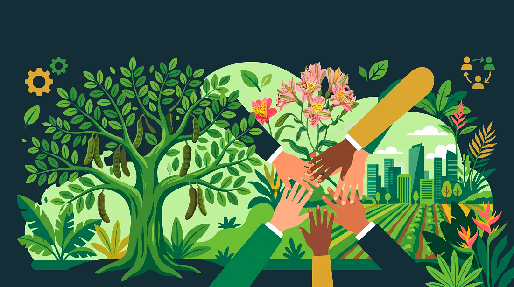

Programa Continental
Senderos de Vida - Lima
Un programa de la Fundación América Sostenible (FAS) impulsado localmente por la Asociación Legado Botánico (ALEBO).
Sobre la iniciativa
Devolviéndole la conectividad biológica a la ciudad
Senderos de Vida - Lima forma parte de la red continental impulsada por la Fundación América Sostenible (FAS). Esta iniciativa busca enfrentar de manera directa la fragmentación del paisaje natural urbano y la progresiva pérdida de biodiversidad mediante la creación de corredores ecológicos que conectan parques, jardines, vías y espacios naturales en los ámbitos urbanos y sus alrededores.
A través de esta alianza estratégica, transformamos espacios urbanos complejos en refugios dinámicos de flora nativa y adaptada, promoviendo la restauración biológica y apoyando a las redes de viveros locales para multiplicar el capital natural de Lima.
"Un habitante, una planta: 10 millones de ejemplares para devolverle la vida y la conectividad biológica a Lima."
Nuestra visión
Nuestros Pilares de Impacto en Lima
1. Capital Natural y Producción Local
Incorporamos la capacidad de viveros comunitarios y botánicos para asegurar la propagación responsable de especies adaptadas.
2. Conectividad Ecológica Urbana
Restauramos la trama verde uniendo espacios periurbanos e intraurbanos, generando 'puentes de vida' esenciales para polinizadores y aves.
3. Resiliencia y Clima
Mitigamos el efecto de isla de calor urbana, mejoramos la captación de agua de lluvia y contribuimos a la captura de carbono.
4. Empoderamiento Ciudadano
Involucramos a vecinos, escuelas y organizaciones civiles mediante el programa de Guardianes del Sendero en talleres y siembras.
Participación
¿Cómo sumarte a la red?
Comunidad y Ciudadanía
Adopta una planta nativa, participa en las jornadas de siembra comunitaria o capacítate como Guardián del Sendero.
Viveros e Instituciones
Intégrate a la red técnica de producción de especies clave y al monitoreo biológico constante.
Empresas y Sponsors
Financia hectáreas de corredores verdes e impulsa de forma activa el voluntariado corporativo de tu organización.